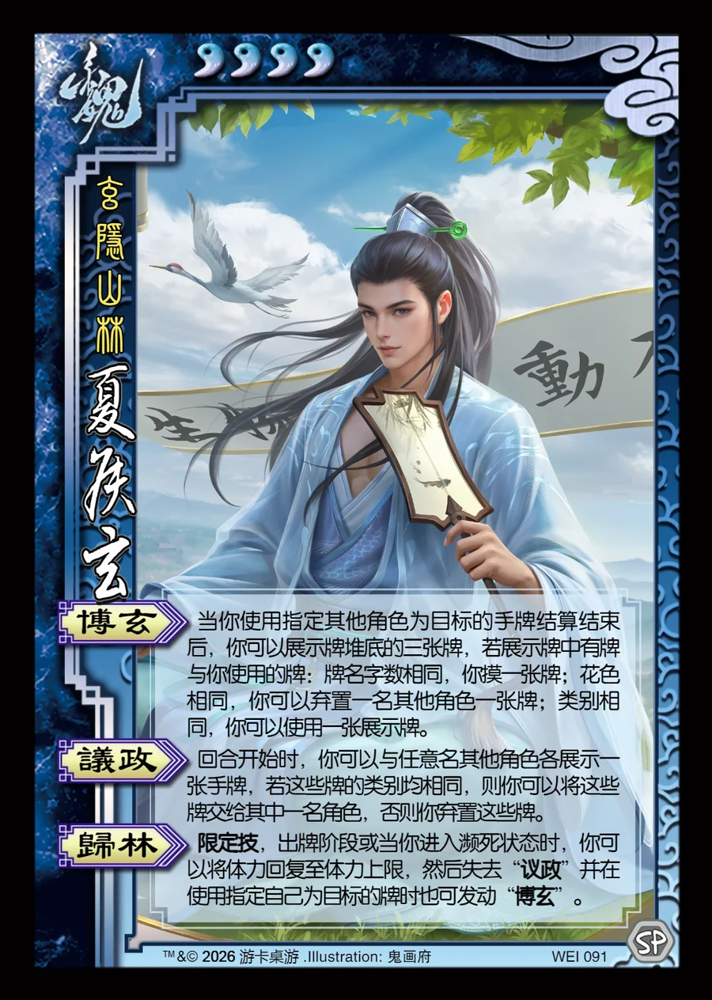

点击卡面查看大图
魏
夏侯玄
♥4玄隐山林
博玄
当你使用指定其他角色为目标的手牌结算结束后，你可以展示牌堆底的三张牌，若展示牌中有牌与你使用的牌：牌名字数相同，你摸一张牌；花色相同，你可以弃置一名其他角色一张牌；类别相同，你可以使用一张展示牌。
议政
回合开始时，你可以与任意名其他角色各展示一张手牌，若这些牌的类别均相同，则你可以将这些牌交给其中一名角色，否则你弃置这些牌。
归林限定技
限定技，出牌阶段或当你进入濒死状态时，你可以将体力回复至体力上限，然后失去“议政”并在使用指定自己为目标的牌时也可发动“博玄”。